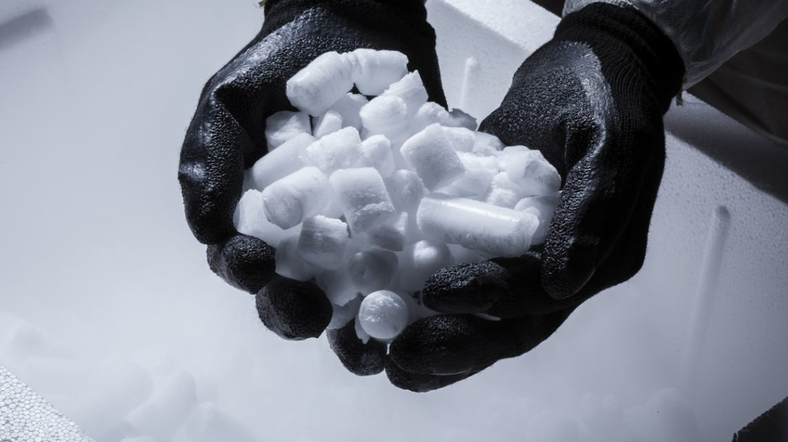

No me mates matemática

Ven a aprender sobre la ciencia de las matematicas de la forma mas divertida posible, interactuando con objetos y con multiples juegos!
Localizacion: Auditorio-Sala 4
Demostración Física

En esta demostración física, desafiaremos los estándares de nuestro pensamiento para cambiar nuestra perspectiva.
Localizacion: Auditorio-Sala 2